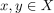
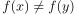
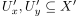
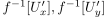
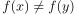
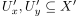
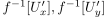

stetige Injektion auf einen Hausdorff-Raums als Hasudorff-Raum
1. Satz
Seien  und
und  topologische Räume,
topologische Räume,  ein Hausdorff-Raum und
ein Hausdorff-Raum und  eine stetige Injektion.
Dann ist
eine stetige Injektion.
Dann ist  ebenfalls ein Hausdorff-Raum
ebenfalls ein Hausdorff-Raum
2. Beweis
Seien  mit  , so gilt wegen der Injektivität 
Nach Annahme existierendisjunkte, Umgebungen .
Wegen der Charakterisierung der Stetigkeit anhand des Urbilds von Umgebungen unter stetigen Abbildungen, folgt, dass  Umgebungen von
, so gilt wegen der Injektivität 
Nach Annahme existierendisjunkte, Umgebungen .
Wegen der Charakterisierung der Stetigkeit anhand des Urbilds von Umgebungen unter stetigen Abbildungen, folgt, dass  Umgebungen von  sind.
Dabei zusätzlich sind diese wegen der Rechtseindeutigkeit disjunkt.
sind.
Dabei zusätzlich sind diese wegen der Rechtseindeutigkeit disjunkt.